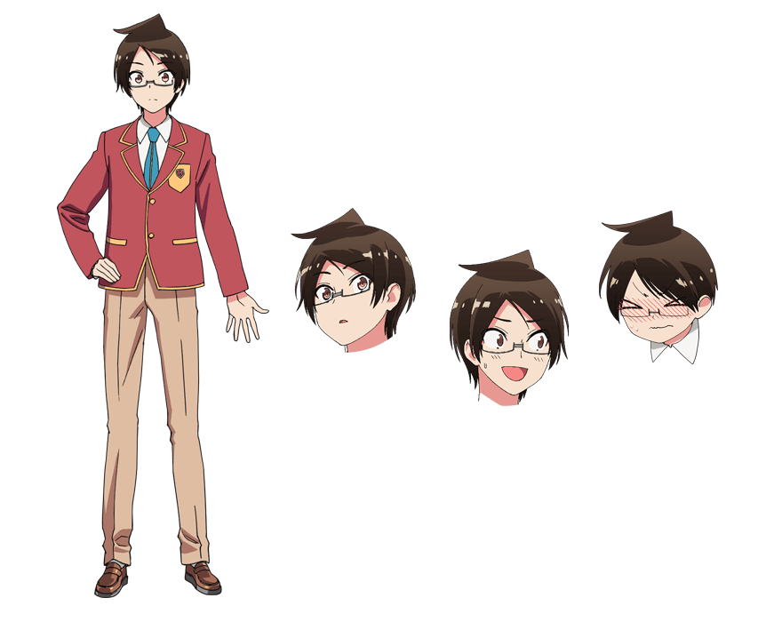

CHARACTER
-
ゆい唯
が我
なり成
ゆき幸
CV.逢坂良太
飛び抜けた才能はないものの、
ほぼ全教科で８割以上の成績を誇る秀才！
家族のために受験・学費免除の
「特別ＶＩＰ推薦」を目指している。
真面目で面倒見のよい性格だが、
教育係として熱心すぎるあまり
自分の恋愛には鈍感。 -
ふる古
はし橋
ふみ文
の乃
CV.白石晴香
「文学の森の眠り姫」こと文系の天才で、
紡ぎ出す文章は読む者・聞く者すべての心に感動を巻き起こす。
一方で理系教科にはめっぽう弱く、
数式を見るだけで頭が真っ白に！
性格は明るく人当りがよいが、たまに辛辣な言葉も…!? -
お緒
がた方
り理
ず珠
CV.富田美憂
「機械仕掛けの親指姫」と呼ばれる理系の天才で、
難解な数式も瞬時に解を導く！
理系の考え方が染みついており、
性格は生真面目でやや頑固。
そのため人心を読み解く文系科目は特に苦手。
大好きなアナログゲームも、駆け引き下手で腕前は…。 -
たけ武
もと元
う
る
か
CV.鈴代紗弓
「白銀の漆黒人魚姫」と呼ばれる水泳の天才。
水泳一辺倒で勉強は大の苦手だが、
スポーツ推薦のため英語を猛勉強中！
成幸とは中学からの付き合いで、密かに想いを寄せている。
元気で飾らない性格だが、恋愛となると一気に乙女に!! -
きり桐
す須
ま真
ふゆ冬
CV.Lynn
一ノ瀬学園教師。
文乃と理珠の最初の教育係で、
２人に進路変更を勧めたことも。
冷徹な言動で周囲から恐れられているが、
生徒思いの優しい先生。
有能で仕事もきっちりこなす。
しかし私生活では相当ズボラで、さらにドジっ娘な一面も!? -
こ小
み美
なみ浪
あ
す
み
CV.朝日奈丸佳
浪人して受験勉強に励む一ノ瀬学園のＯＧ。
医学部を志望しつつも理科全般が苦手で、
後輩の成幸に教わることもしばしば。
ある事情で成幸と恋人同士のフリをすることになり、
純情な成幸をからかっては楽しんでいる様子だ。